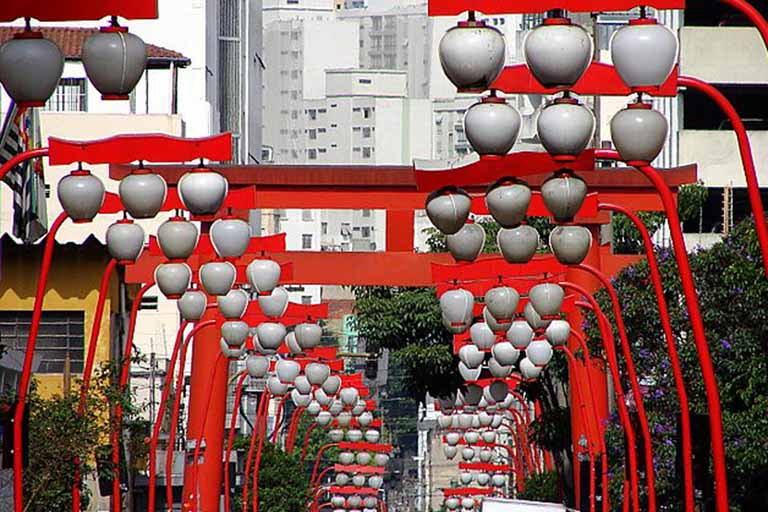

Bairro da Liberdade
Maior reduto da comunidade japonesa, que é considerada a maior do mundo fora do Japão.

Parque Ibirapuera
Já foi o parque mais visitado da América Latina, sendo um dos lugares mais fotografados do mundo.
Museu do Futebol
Espaço voltado para diferentes assuntos envolvendo muito sobre o futebol brasileiro e mundial.